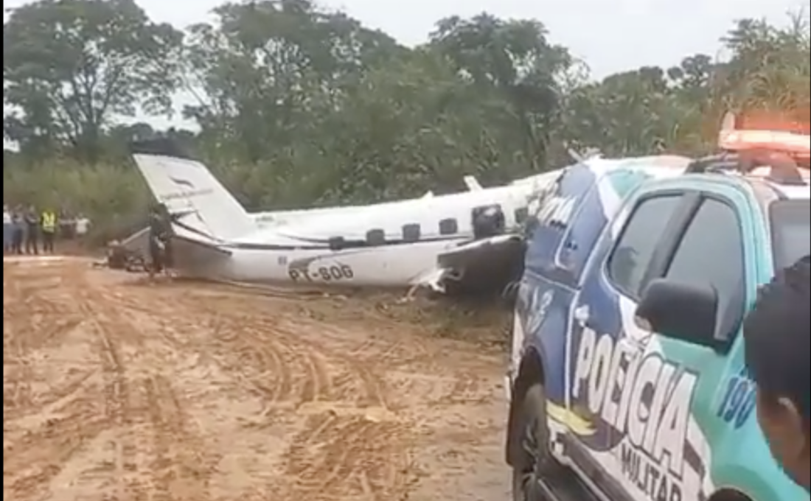

.jpg)
Um avião da companhia PEPB Linhas Aéreas caiu na manhã desta segunda-feira (27) em uma área rural próxima à cidade de São Carlos (SP). A aeronave fazia o trajeto Campinas–Uberaba e transportava 58 passageiros e 5 tripulantes.
O que se sabe até agora
A aeronave, modelo Embraer EMB‑121 Xingu, matrícula PT-MBU, operava sob a empresa Abaeté Aviação e tinha autorização para táxi aéreo. UOL Notícias O voo decolou de Florianópolis (SC) às 16h51 e tinha como destino Belo Horizonte (MG). O acidente ocorreu por volta das 18h39 no município da cidade de São Carlos (SP), durante forte tempestade. A aeronave teria colidido contra um morro e pegado fogo. Todos os cinco ocupantes da aeronave — comandante, piloto, médica, enfermeiro e mecânico — morreram no acidente. Em nota, a Abaeté Aviação afirmou estar prestando apoio às famílias das vítimas.
O que está sendo investigado
O Centro de Investigação e Prevenção de Acidentes Aeronáuticos (Cenipa) foi acionado para realizar a “Ação Inicial” da ocorrência, procedimento padrão que inclui preservação dos destroços, coleta de dados da caixa-preta, entrevistas com testemunhas e análise das condições meteorológicas. Considera-se entre os fatores potenciais: condições meteorológicas adversas (tempestade no momento do impacto), possível erro de rota ou descida, estado da aeronave e da tripulação, e eventual falha técnica ou operacional. Até o momento, não há confirmação pública de qual foi exatamente o fator determinante — ou se houve combinação de mais de um.
Implicações e importância do caso
A queda de uma aeronave em condições de voo autorizadas coloca em evidência a necessidade de rigor operacional, manutenção, treinamento da tripulação e atenção às condições meteorológicas adversas. Para a aviação regional, esse tipo de acidente repercute no nível de confiança de passageiros e operadores, especialmente em voos de menor porte. A transparência no processo investigativo e a divulgação de lições aprendidas são cruciais para prevenir novos acidentes semelhantes.